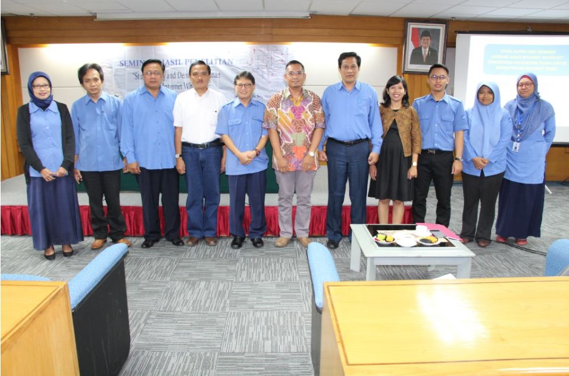

|
BALAI PENGEMBANGAN SUMBER DAYA MANUSIA DAN PENELITIAN KOMINFO YOGYAKARTA BADAN PENELITIAN DAN PENGEMBANGAN SUMBER DAYA KEMENTRIAN KOMUNIKASI DAN INFORMATIKA REPUBLIK INDONESIA Menuju Masyarakat Informasi Indonesia |
|
Seminar Hasil Penelitian "Study Supply dan Demand Layanan Akses Internet Whitelist" 22-09-2016 oleh Admin BPPKI Yogyakarta Jakarta - Puslitbang Aplikasi Informatika dan Informasi dan Komunikasi Publik, Badan Penelitian dan Pengembangan Sumber Daya Manusia, Kementerian Kominfo, mengadakan seminar hasil penelitian “Studi Supply dan Demand Layanan Akses Internet Whitelist”, (21/09). Seminar hasil penelitian ini bertujuan untuk menyempurnakan laporan akhir penelitian bidang aplikasi informatika. Hasil penelitian ini seperti disampaikan Ketua Tim Penelitian, Emyana Ruth Eritha Sirait, antara lain mengungkapkan, bahwa Sistem whitelist sebaiknya diterapkan sesuai permintaan / kebutuhan dari pengguna (on demand), dan bukan menjadi kebijakan nasional. Untuk itu, sistem ini perlu dikembangkan/ dikemas sehingga memiliki nilai lebih (value added) dan nilai jual (selling point). Basuki Yusuf Iskandar dalam menanggapi hasil penelitian ini “Konsep yang perlu dikritisi dalam penelitian ini mengenai konsep Producer Behaviour: effective profit. kalau tidak ada profit jangan mengharapkan swasta mau bekerja sama. Karena dia (swasta) harus menanggung investasi yang harus kembali, menanggung karyawan, dan prospek bisnis,” ujar Kepala Badan Litbang SDM Kementerian Kominfo tersebut. Dikatakan juga kerangka konsep penelitian ini perlu diganti. “Sikap terhadap sistem penyaringan situs negatif di internet (dalam kerangka konsep) saya kira tidak relevan. Saya kira kerangka konsep ini perlu diganti dengan profit dan sustainability, dan untuk masalah ke depannya perlu mencakup mengenai prospek.” Ia pun menjelaskan bahwa pemerintah wajib memberikan bantuan dalam whitelist. “Pada hal-hal tertentu intervensi Negara harus masuk. Dalam hal ini (whitelist) pemerintah wajib memberikan bantuan, seperti membantu untuk menambahkan whitelist dari pemerintah, bukan membatasi, membantu konten untuk Internet Service Provider (ISP) yang dedicated kepada whitelist, ISP itu sendiri juga dapat menambahkan kontennya sendiri. Nanti biar pasar yang mengoreksi, biarkan mekanisme pasar yang menjadi pengawas. Jadi sasaran kita adalah kelompok atau asosiasi perusahaan yang membantu kebijakan pemerintah, dan ini perlu diwadahi sehingga kita mudah dalam memberikan bantuan, dan hal ini perlu dibudayakan untuk menjaga moralitas bangsa.” Sementara Bambang Tri Santoso menjelaskan apa saja yang sudah dilakukan PII, Dit.Aptika. “Yang dilakukan PII tahun ini untuk program pertama hanya dibatasi pada tingkat sekolah, dan pesantren di 7 (tujuh) provinsi, dan sosialisasinya baru kita lakukan di 2 (dua) tempat (Yogya dan Bali). Untuk tahapan proses implementasinya, kita menggandeng teman-teman dari (Pengelola Nama Domain Internet Indonesia (PANDI), Asosiasi Penyelenggara Jasa Internet Indonesia (APJII), Muhamadiah, dan NU. Kita melakukan demo untuk merekomendasikan domain. Setelah melakukan implementasi dan sosialisasi, kita menyebarkan kuesioner kepada peserta sosialisasi. Mau tidak dipasang whitelist Nusantara?. Kalau mau kita pasangkan dan ada pendampingan dalam proses pemasangannya. Kita juga menyediakan website whitelist.id sebagai portal untuk mengecek apakah daftar domain sudah ada di database whitelist, dan untuk memasukkan data pada database whitelist Nusantara. Dan untuk forum panel kita dari Kemdikbud, Kemenag, DPP LDII, Nawala, PANDI, Bogor Network, Muhammadyah, dan NU. Target kita adalah 1 juta domain, dan saat ini sudah ada 198 juta domain yang sudah dikumpulkan,” ujar Kasubdit Tata Kelola, PI, Dit. Aptika Kementerian Kominfo tersebut. Sedangkan Firman Kurniawan mengatakan bahwa penelitian ini dalam kerangka konsepnya tidak mencerminkan pertanyaan tentang sikap. “Tidak semua yang ada dalam kerangka konsep mencerminkan pertanyaan tentang sikap. Whitelist terdengar asing bagi kita, apalagi bagi responden. Ketika ada pertanyaan “bagaimana penerimaan terhadap whitelist?” saya rasa jawabannya hanya imajinasi mereka terhadap whitelist,” ujar Pakar Kebijakan Publik Univeritas Indonesia tersebut. Ia juga menyarankan perlu pendekatan dalam menyosialisasikan whitelist, yang memungkinkan pemerintah menertibkan dengan surat edaran, dan dengan difusi inovasi: mencoba. Ketika hal tersebut dirasa baik, maka mereka akan mau menggunakan. Kiki Veriko menegaskan bahwa whitelist adalah komplementer bukan substitusi. “Whitelist adalah komplementer, bukan substitusi terhadap blacklist, itu yang paling penting. Bagaimana cara membedakan antara substitusi dengan komplementer yaitu; blacklist supply as demand. Whitelist berdasarkan demand,” ujar Peneliti sekaligus Dosen Lembaga Penyelidikan Ekonomi dan Masyarakat (LPEM), FEB, Universitas Indonesia tersebut. Lebih lanjut dikatakannya, “Yang menjadi pertanyaan berikutnya adalah bagaimana dengan supply-nya? Whitelist memang berdasarkan demand, ada pangsa pasarnya yg besar, namun tidak konsisten dengan weakness. Ini berarti ada konsep yang tidak sesuai, yaitu willingness to pay. Ini yang membuat market lemah. Sehingga diperlukan intervensi pemerintah. Bisa berupa Kominfo bekerja sama dengan pihak lain dalam hal memberikan konten positif ke sekolah-sekolah. Karena whitelist merupakan komplementer, maka implementasi dan kebijakannya harus berbeda, salah satu caranya bisa dengan membungkusnya dengan desain yang menarik. Ia juga mengatakan bahwa riset ini penting, sehingga perlu di-sounding ke Kementerian lain, terutama bagaimana caranya untuk menjadi nilai tambah ekonomi. Kominfo juga perlu melihat supply side lainnya. Seminar Hasil Penelitian “Studi Supply dan Demand Layanan Akses Internet Whitelist” diadakan di BPPT,dihadiri oleh perwakilan dari Ditjen Aptika, Pejabat Struktural, peneliti dan calon peneliti di lingkungan Badan Litbang SDM, beserta staf di lingkungan Puslitbang Aptika dan IKP. (NM) |
Berita
13-02-2017
10-02-2017
22-09-2016
20-05-2010
|
Tentang KamiBPSDMP Kominfo Yogyakarta berfokus pada kegiatan
Media SosialHubungi KamiJl. Imogiri Barat No.km 5 Bangunharjo, Sewon, Bantul Daerah Istimewa Yogyakarta 55188 (0274) 375253 (0274) 375253 © Balai Pengembangan Sumber Daya Manusia dan Penelitian Komunikasi dan Informatika Yogyakarta Kementerian Komunikasi dan Informatika Republik Indonesia |